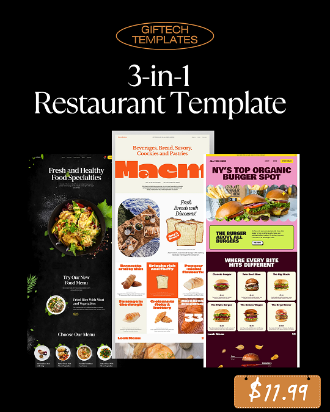

🍽 Template 1 – Classic Dining
A traditional and stylish restaurant layout ideal for cafes, steakhouses, and classic diners.
Everything you need to get started
This package includes 3 single-page restaurant website templates built with HTML, TailwindCSS, JavaScript (Alpine.js), and Google Fonts. Each design is mobile responsive and tailored for fast customization and deployment.
python3 -m http.serverA traditional and stylish restaurant layout ideal for cafes, steakhouses, and classic diners.
A bold, playful, and vibrant look for food trucks, burger joints, and fast food services.
A luxury-inspired design ideal for high-end restaurants, wine bars, and gourmet experiences.